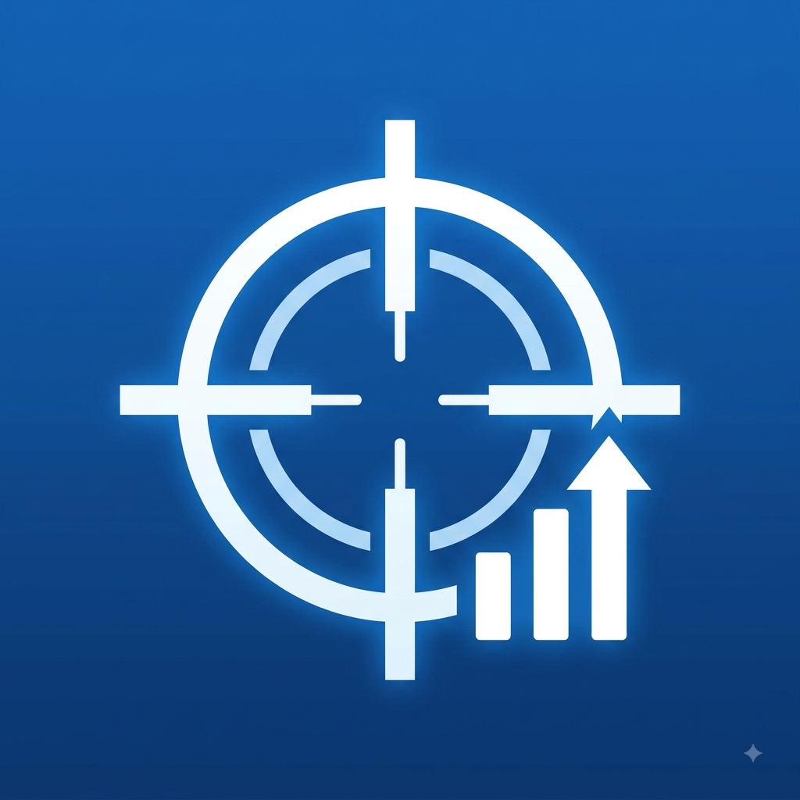

Sensibilidade Perfeita no Capa
Por: Lucas Viana Simioni
Descubra como ajustar a sensibilidade do seu jogo e DPI do mouse para garantir a precisão máxima sem gastar nada.
Fonte: Guia Gaming
Compartilhando dicas, otimizações e utilitários gratuitos para melhorar seu desempenho nos jogos

Por: Lucas Viana Simioni
Descubra como ajustar a sensibilidade do seu jogo e DPI do mouse para garantir a precisão máxima sem gastar nada.
Fonte: Guia Gaming

Por: Lucas Viana Simioni
Aprenda a desativar processos desnecessários em segundo plano no Windows para rodar seus jogos com mais fluidez.
Fonte: Dicas do Lucas

Por: Lucas Viana Simioni
Ajustes simples na sua rede DNS e configurações de roteador que ajudam a estabilizar a conexão e evitar lag spikes.
Fonte: TechRedes

Por: Lucas Viana Simioni
Configure o áudio do seu headset para ouvir os passos dos adversários com clareza antes mesmo de ser visto.
Fonte: Áudio Gamer Pro

Por: Lucas Viana Simioni
Entenda o que é permitido pela comunidade competitive e quais modificações leves de sistema não banem sua conta.
Fonte: eSports Brasil

Por: Lucas Viana Simioni
A mentalidade, o posicionamento de tela e a rotina de treino dos melhores jogadores sem precisar de softwares pagos.
Fonte: Pro League Hub